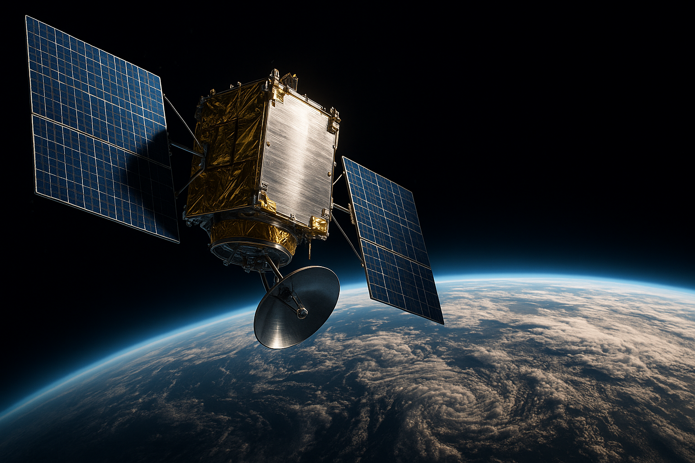
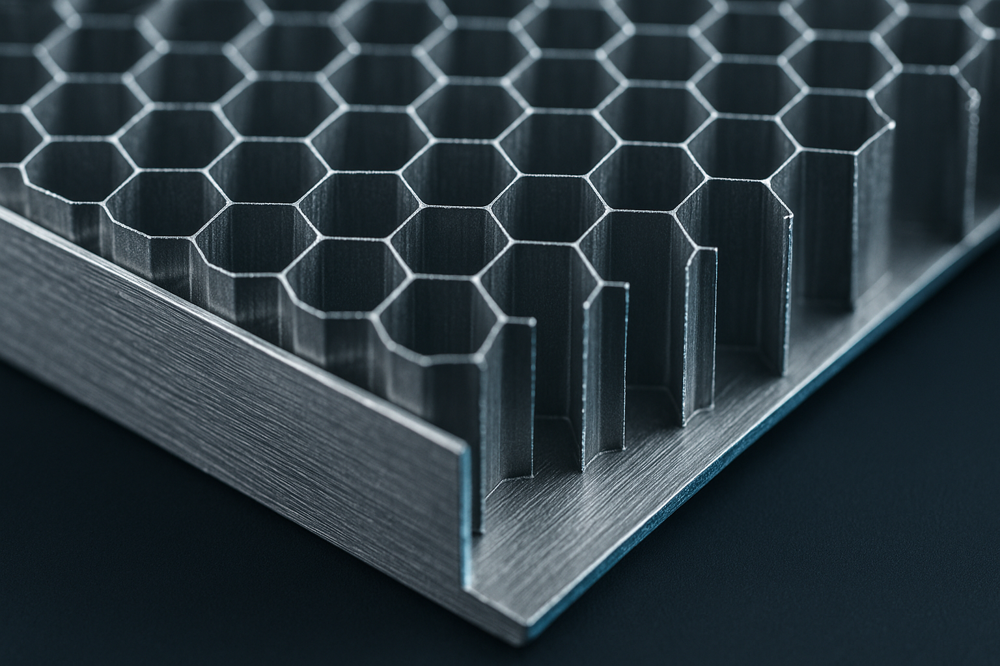

0%
of a satellite's structure is aluminium alloy
From the primary bus frame to bracketry and skins, alloys like 6061-T6 and 7075 carry launch loads at a fraction of the mass penalty.
CALIBRATING ORBIT
// LOW EARTH ORBIT — 550 KM ABOVE YOU
01 // THE MISSION
Every object we fly follows one of three doctrines. Together they form a closed loop around the planet — nothing launched, nothing lost.
Autonomous collision avoidance across every crossing lane.
Capture and deorbit of defunct hardware and debris.
In-orbit recovery of aluminium structure for the next build.
02 // THE SPACECRAFT
Two hundred and forty kilograms of aluminium, silicon and intent — closing in at eight kilometres every second.
CURRENT SPEED
27k km/h
ALTITUDE
550 km
TARGETS DETECTED
2 satellites
NEXT INTERCEPT
2h 30m 13s
03 // EXPLODED VIEW
Keep scrolling — AL-01 will open up for you.
04 // MATERIALS
Steel built the industrial age. Aluminium is building the orbital one — it is the quiet structural hero of nearly every spacecraft ever flown.
0%
From the primary bus frame to bracketry and skins, alloys like 6061-T6 and 7075 carry launch loads at a fraction of the mass penalty.

0×
One-third the density — and in orbit, every saved kilogram is roughly $10,000 that never has to leave the launch pad.
∞
Aluminium melts down and flies again without losing its properties. Our REUSE doctrine turns retired satellites into raw feedstock — in orbit.

05 // TRANSMISSION ENDS
AL-01 passes overhead sixteen times a day.
The next pass is closer than you think.